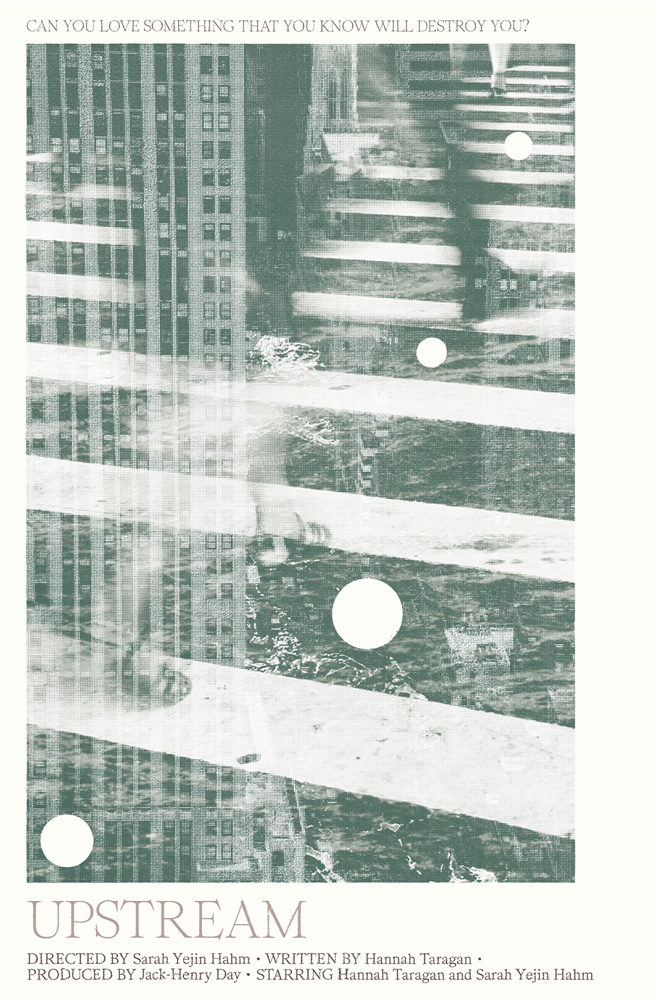

Elisa Slaton
Elisa Slaton is a multidisciplinary graphic designer based in Virginia focused on visual identity, web design, art direction, brand development, and consulting for collaborative, upstart, and commercial clients. She prides herself on having no distinct style or method in her practice, leaving space to evolve across digital and physical matters.
Work
-
↘︎ Revival
Creative, Web Design, Email Marketing
In collaboratation with website developer, Sana Masud.
Promotional, reflective website and email newsletter for Revival, a folk rooted project written and produced by Annahstasia Enuke. → VISIT WEBSITE
-
↘︎ Upstream
Creative, Design
Upstream: A Short Film, 2021
Upstream follows two young women, Clara and Erica. Clara, a chaotic, mismanaged, ill-equipped and pregnant mother to be, in the crux of a quarter-life crisis, desperately searches for her birth mother to ask what it was like to give her up for adoption. She stands beside her best friend Erica, a graceful, structured, and nurturing young woman who quickly and unexpectedly takes on the role of Caretaker for her seven-year-old cousin, whose parents have just passed away.
The film unapologetically explores themes of adoption, motherhood, and the expectations of young womanhood through a delicate balance of poetry and fiction narrative.
 -
↘︎ The Sojourner Project
Creative, Web Design, Email Marketing, Digital Promotion
In collaboration between Nontsikelelo Mutiti, Quynh Nguyen, Bryant Wells, and Alvin Ashiatey.
The Sojourner Project is a mobile Black Studies academy initiated by the Practicing Refusal Collective, an international Black feminist forum of artists and scholars dedicated to initiating dialogues on blackness, anti-black violence and black futurity in the twenty-first century. → VISIT WEBSITE
The Sojourner Project - South Africa is presented by the Practicing Refusal Collective in partnership with Art for Humanity (AFH), Durban University of Technology, Visual Identities in Art and Design (VIAD), University of Johannesburg, The Black Visualities Initiative at the Cogut Humanities Institute at Brown University, and the Center for the Study of Race, Indigeneity, and Transnational Migration at Yale University.
-
↘︎ Bi$i Blvd
Identity, Logo Design
Branding and collateral for a Robo-investing app for companies.
-
↘︎ Evelyn R. Carter, PH.D.
Identity, Logo Design
Full suite branding for Evelyn R. Carter, PH.D.,a social psychologist with over a decade of experience researching and applying evidence-based diversity, equity, and inclusion (DEI) practices.
-
↘︎ Sally Lou Loveman
Logo Design
Logo and Crewneck design for Sally Lou Loveman; an accomplished speaker, author, coach, and audience engagement expert helps people become confident speakers.
-
↘︎ R. Leigh Beauty
Identity, Logo Design
Branding for R. Leigh, professional hair-stylist and natural hair expert, dubbed by Byrdie.
-
↘︎ Kareracter Club
Logo Design
Logo design for Kareracter's offshoot brand Kareracter Club, a member's club for businesses with on-going design needs. → VISIT WEBSITE
-
↘︎ Chakena Perry
Logo Design
Kena has entered the building and she’s ready to shake things up. Keena is the mouthpiece for a generation who’s tired of the status quo.She’s mobilizing millennials and activating the next generation of civic leaders. With this bold, yet approachable campaign concept, the city will have no choice but to pay attention to the newest voice of the people, Chakena ‘Keen Eye’ Perry.
Chakena is running for State Representative of the 32nd District, in Chicago, IL. for 2021.
-
↘︎ The Sheldon Brand
Branding, Web Design
Branding and Web Design for Chicago based nonprofit leader, and social entrepreneur, Sheldon Smith.
Services
Web Design
Identity Design
Digital Marketing
Printed Matter
Clients | Collaborators